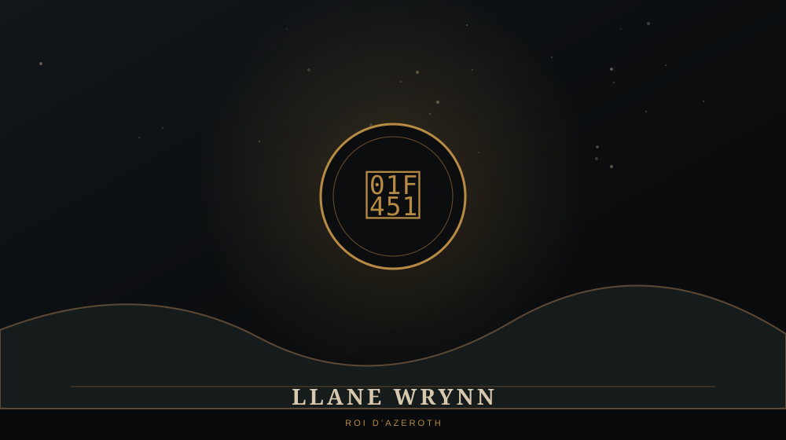

LLANE WRYNN

👑 QUI EST LLANE WRYNN ?
Llane Wrynn est le souverain du royaume humain d'Azeroth lorsque la Horde commence ses incursions. Depuis Stormwind, il dirige un royaume encore prospère qui ne mesure pas immédiatement l'ampleur de la menace venue d'un autre monde.
Dans Warcraft: Orcs & Humans, le joueur agit sous son autorité. Les premiers ordres paraissent presque administratifs — développer des fermes, sécuriser des régions — avant que la campagne ne bascule progressivement dans une guerre totale.
⚔️ DANS WARCRAFT I
Llane est la figure politique qui encadre la campagne humaine. Ses briefings permettent de suivre l'escalade du conflit : Westfall, Grand Hamlet, la découverte des forces de Blackhand puis les opérations de plus en plus profondes contre la Horde.
Sa présence rappelle que le joueur ne mène pas une armée indépendante : il défend le royaume d'Azeroth au nom de son roi.
🤝 LIENS IMPORTANTS
Llane appartient à la dynastie Wrynn. Son histoire est étroitement liée à Anduin Lothar et Medivh, trois personnages dont les destins se croisent bien avant le début de la Première Guerre.
⚠️ LORE ULTÉRIEUR / SPOILERS
La continuité ultérieure précise que Llane est assassiné pendant la Première Guerre par Garona. Son fils Varian Wrynn survit à la chute du royaume et deviendra bien plus tard l'une des grandes figures de Stormwind.
Dans Warcraft I, le royaume est généralement appelé simplement « Azeroth ». Les jeux suivants emploieront davantage le nom de Stormwind pour distinguer ce royaume du monde d'Azeroth lui-même.